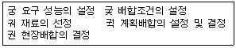
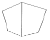
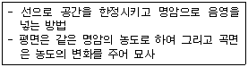
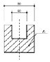

전산응용건축제도기능사 (2005-07-17 기출문제)
1과목: 건축구조
1. 다음 중 조적식 구조로만 짝지어진 것은?
- 철근콘크리트구조 - 벽돌구조
- 철골구조 - 목구조
- 벽돌구조 - 블록구조
- 철골철근콘크리트구조 - 돌구조
(정답률: 83%)

2. 다음 중 철근의 겹침길이와 정착길이의 결정요인과 가장 관계가 먼 것은?
- 철근의 종류
- 콘크리트의 강도
- 갈고리의 유무
- 물시멘트비
(정답률: 67%)
3. 철근콘크리트 보에 대한 설명 중 옳지 않은 것은?
- 보는 하중을 받으면 휨모멘트와 전단력이 생긴다.
- T형보는 압축력을 슬래브가 일부 부담한다.
- 보 단부의 헌치는 주로 압축력을 보강하기 위해 만든다.
- 보의 인장력이 작용하는 부분에는 반드시 철근을 배근한다.
(정답률: 54%)
4. 목조 왕대공지붕틀의 각 부재에 대한 설명 중 옳지 않은 것은?
- 중도리는 서까래를 받아 지붕의 하중을 지붕틀에 전하는 것이므로 지붕틀에 튼튼히 고정해야 한다.
- 빗대공은 인장재이므로 경사를 아주 완만하게 할수록 좋다.
- 중도리가 ㅅ자보의 절점에 올 때에는 단순한 압축재이지만 그 절점간에 올 때에는 휨을 받는 압축재가 된다.
- 지붕 가새는 지붕틀의 전도방지를 목적으로 V자형이나 X자형으로 배치한다.
(정답률: 50%)
5. 벽돌조에서 개구부와 개구부 사이의 수직거리는 최소 얼마 이상으로 하는가?
- 20㎝
- 40㎝
- 60㎝
- 80㎝
(정답률: 71%)
6. 왕대공 지붕틀의 보강재가 아닌 것은?
- 귀잡이보
- 버팀대
- 대공가새
- 토대
(정답률: 58%)
7. 바닥 면적이 40m2 일 때 보강콘크리트블록조의 내력벽 길이 의 총합계는 최소 얼마이상이어야 하는가?
- 4m
- 6m
- 8m
- 10m
(정답률: 56%)
8. 코너 비드(coner bead)에 대한 설명으로 옳은 것은?
- 계단 모서리 끝 부분의 보강 및 미끄럼 방지를 위해 설치한다.
- 강철, 금속재의 콘크리트용 거푸집으로 특히 치장콘크리트에 많이 사용된다.
- 기둥과 기둥에 가로대어 창문틀의 상하벽을 받고 하중을 기둥 에 전달하며 창문틀을 끼워 대는 뼈대가 되는 것이다.
- 벽, 기둥 등의 모서리를 보호하기 위하여 미장바름질을 할 때 붙이는 보호용 철물이다.
(정답률: 66%)
9. 리벳에 관한 용어의 설명 중 옳지 않은 것은?
- 게이지 라인: 재축방향의 리벳 중심선
- 게이지: 각 게이지 라인간의 거리 또는 게이지 라인과 재면과의 거리
- 그립: 게이지 라인상의 리벳 간격
- 클리어런스: 리벳과 수직재면과의 거리
(정답률: 43%)
10. 벽돌조에서 콘크리트 기초판의 두께는 기초판 폭의 얼마정도 로 하는가?
- 2/3
- 1/2
- 1/3
- 1/4
(정답률: 41%)
11. 철근콘크리트구조의 각종 형식에 대한 설명 중 옳지 않은 것은?
- 셸 구조는 기둥, 보, 바닥 슬래브 등을 강접합하여 하중에 대 해서 일체로 저항하도록 되어 있는 구조이다.
- 벽식 구조는 보와 기둥 대신 슬래브와 벽이 일체가 되도록 구성한 구조이다.
- 플랫 슬래브 구조는 보를 없애고 바닥판을 두껍게 해서 보의 역할을 겸하도록 한 구조이다.
- 라멘 구조에서 보는 일반적으로 직사각형 단면을 사용하며, 기둥은 사각형이나 원형의 단면을 사용한다.
(정답률: 47%)
12. 다음 중 철골조 플레이트보(plate girder)의 구성부재에 해당 되지 않는 것은?
- 래티스
- 스티프너
- 플랜지 앵글
- 커버 플레이트
(정답률: 39%)
13. 철근콘크리트 기둥에 대한 설명 중 옳은 것은?
- 띠철근 기둥 단면의 최소 치수는 400㎜ 이다.
- 한 건물에서는 기둥의 간격을 다르게 하는 것이 유리하다.
- 기둥의 축방향 주철근의 최소 개수는 직사각형 띠철근내부의 철근의 경우 4개이다.
- 기둥 철근의 피복두께는 20㎡ 이상으로 해야 한다.
(정답률: 65%)
14. 표준형 벽돌의 1.5B 쌓기의 두께는? (공간쌓기 아님)
- 280mm
- 290mm
- 310mm
- 320mm
(정답률: 74%)
15. 목재의 이음과 맞춤을 할 때 주의해야 할 사항으로 틀린 것은?
- 이음과 맞춤은 응력이 큰 곳에서 하여야 한다.
- 맞춤면은 정확히 가공하여 서로 밀착되어 빈틈이 없게 한다.
- 공작이 간단하고 튼튼한 접합을 선택하여야 한다.
- 재는 될 수 있는 한 적게 깎아내어 약하게 되지 않도록 한다.
(정답률: 66%)
16. 다음의 철골보에 대한 설명 중 옳지 않은 것은?
- 형강보에는 주로 I형강과 H형강이 사용된다.
- 허니콤보는 강재량에 비해 단면 성능이 좋고, 개구부를 덕트 배관 등에 이용할 수 있다.
- 트러스보는 웨브에 철판을 쓰고 상하부에 플랜지 철판을 용접 하거나 ㄱ형강을 리벳 접합한 것이다.
- 래티스보는 상하플랜지에 ㄱ형강을 쓰고 웨브재로 대철을 일정한 각도로 접합한 조립보의 일종이다.
(정답률: 46%)
17. 건물의 하부 전체 또는 지하실 전체를 하나의 기초판으로 구성한 기초는?
- 독립기초
- 줄기초
- 온통기초
- 복합기초
(정답률: 82%)
18. 건축구조의 구성방식에 의한 분류 중 하나로, 구조체인 기둥 과 보를 부재의 접합에 의해서 축조하는 방법으로, 뼈대를 삼각형으로 짜 맞추면 안정한 구조체를 만들 수 있는 구조는?
- 가구식 구조
- 캔틸레버 구조
- 조적식 구조
- 건식 구조
(정답률: 53%)
19. 나무구조의 홑마루틀에 대한 설명으로 옳은 것은?
- 1층 마루의 일종으로 마루 밑에는 동바리돌을 놓고 그 위에 동 바리를 세운다.
- 큰보 위에 작은보를 걸고 그 위에 장선을 대고 마루널을 깐 것 이다.
- 보를 걸어 장선을 받게 하고 그 위에 마루널을 깐 것이다.
- 보를 쓰지 않고 층도리와 간막이도리에 직접 장선을 걸쳐대고 그 위에 마루널을 깐 것이다.
(정답률: 56%)
20. 연약한 지반에서 부동침하를 방지하는 대책으로 적당하지 않은 것은?
- 건물을 경량화 한다.
- 건물의 평균길이를 크게 한다.
- 건물의 강성을 높인다.
- 이웃건물과의 거리를 멀게 한다.
(정답률: 63%)
2과목: 건축재료
21. 물체에 외력이 작용되면 순간적으로 변형이 생기지만 외력을 제거하면 원래의 상태로 되돌아가는 성질은?
- 소성
- 점성
- 탄성
- 연성
(정답률: 88%)
22. 건축물의 표면 마무리, 인조석 제조 등에 사용되며 구조체의 축조에는 거의 사용되지 않는 시멘트는 ?
- 조강 포틀랜드 시멘트
- 플라이애시 시멘트
- 백색 포틀랜드 시멘트
- 고로슬래그 시멘트
(정답률: 72%)
23. 아스팔트나 피치처럼 가열하면 연화하고, 벤젠ㆍ알코올 등의 용제에 녹는 흑갈색의 점성질 반고체의 물질로 도로의 포장, 방수재, 방진재로 사용되는 것은?
- 도장재료
- 미장재료
- 역청재료
- 합성수지 재료
(정답률: 38%)
24. 다음 중 재료들의 주용도가 옳게 연결되지 않은 것은?
- 테라코타 : 구조재, 흡음재
- 테라조 : 벽, 바닥면의 수장재
- 트래버틴 : 내벽 등의 특수 수장재
- 타일 : 내외벽, 바닥면의 수장재
(정답률: 70%)
25. 다음 중 시멘트 안정성 시험 방법은?
- 비비 시험기에 의한 시험법
- 오토클레이브 팽창도 시험법
- 브리넬 경도 측정
- 슬럼프시험법
(정답률: 43%)
26. KS규정에 의한 품질등급에서 1종 점토벽돌의 압축강도는? (1kgf≒9.8N)
- 10.78 N/mm2 이상
- 15.69 N/mm2 이상
- 20.59 N/mm2 이상
- 25.49 N/mm2 이상
(정답률: 51%)
27. 금속의 방식법에 대한 설명 중 옳지 않은 것은?
- 아스팔트, 방청 도료를 칠한다.
- 알루미늄은 산화 피막 처리를 하지 않아도 된다.
- 다른 종류의 금속을 서로 잇대어 쓰지 않는다.
- 큰 변형을 준 것은 가능한 한 풀림하여 사용한다.
(정답률: 57%)
28. 돌로마이트 플라스터에 대한 설명 중 옳지 않은 것은?
- 소석회보다 점성이 작다.
- 풀이 필요 없다.
- 변색, 냄새, 곰팡이가 없다.
- 분말도가 미세한 것이 시공이 용이하다
(정답률: 45%)
29. 구리 및 구리 합금에 대한 설명 중 옳지 않은 것은?
- 구리와 주석의 합금을 황동이라 한다.
- 구리는 맑은 물에서는 녹이 나지 않으나 염수(鹽水)에서는 부식된다.
- 청동은 황동과 비교하여 주조성이 우수하고 내식성도 좋다.
- 구리는 연성이고 가공성이 풍부하여 판재, 선, 봉 등으로 만들기가 용이하다.
(정답률: 59%)
30. 다음 중 한중(寒中) 또는 수중(水中) 긴급공사 시공에 가장 적합한 시멘트는?
- 보통 포틀랜드 시멘트
- 중용열 포틀랜드 시멘트
- 조강 포틀랜드 시멘트
- 백색 포틀랜드 시멘트
(정답률: 66%)
31. 단열유리라고도 하며 철, 니켈, 크롬 등이 들어 있는 유리로 서 담청색을 띠고 태양광선 중에 장파부분을 흡수하는 유리 는?
- 열선 흡수유리
- 열선 반사유리
- 자외선 투과유리
- 자외선 차단유리
(정답률: 63%)
32. 다음 중 목재가 건축재료로 갖는 성격이 아닌 것은?
- 가볍고 가공이 쉽다.
- 비중에 비하여 강도가 크다.
- 흡수 및 흡습성이 크다.
- 열전도율이 높아 방한ㆍ 방서성이 나쁘다.
(정답률: 74%)
33. 다음은 콘크리트의 배합설계의 단계를 나타낸 것이다. 가장 합리적인 배합설계의 순서로 적당한 것은?

- 궁→궂→궈→궉→권
- 궈→궂→궁→궉→권
- 궂→궁→궈→권→궉
- 궉→궈→궂→궁→권
(정답률: 55%)
34. 다음 중 미장재료가 아닌 것은?
- 석고
- 시멘트
- 소석회
- 포졸란
(정답률: 58%)
35. 점토의 물리적 성질에 대한 설명 중 옳은 것은?
- 점토의 비중은 일반적으로 3.5~3.6 정도이다.
- 양질의 점토는 점토 입자가 미세할수록 가소성은 나빠진다.
- 미립점토의 인장강도는 30~100kg/㎠ 정도이다.
- 점토의 압축강도는 인장강도의 약 5배이다.
(정답률: 52%)
36. 석재의 일반적 성질에 대한 설명 중 옳지 않은 것은?
- 불연성이고 압축강도가 크다.
- 외관은 장중한 맛이 있고, 치밀한 것은 갈면 아름다운 광택이 난다.
- 내수ㆍ내구ㆍ내화학성이 좋다.
- 길고 큰 부재를 얻기 쉽다.
(정답률: 61%)
37. 다음 중 구조용 재료에 요구되는 성질과 가장 거리가 먼 것은?
- 재질이 균일하고 강도가 큰 것이어야 한다.
- 내화, 내구성이 큰 것이어야 한다.
- 가볍고 큰 재료를 용이하게 얻을 수 있어야 한다.
- 색채와 촉감이 좋은 것이어야 한다.
(정답률: 80%)
38. 골재에 요구되는 성질에 대한 설명으로 옳지 않은 것은?
- 골재의 강도는 콘크리트 중의 경화시멘트 페이스트의 강도 이 상이어야 한다.
- 골재의 표면은 매끈하고 구형에 가까운 것이 좋다.
- 골재는 잔 것과 굵은 것이 골고루 혼합된 것이 좋다.
- 잔골재의 염분함유한도는 0.04%(NaCl) 이하여야 한다.
(정답률: 60%)
39. 점토제품 제조법의 일반적인 순서로 가장 알맞은 것은?
- 원료 배합 - 반죽 - 성형 - 건조 - 소성
- 원료 배합 - 성형 - 반죽 - 건조 - 숙성
- 원료 배합 - 소성 - 반죽 - 성형 - 건조 - 냉각
- 원료 배합 - 반죽 - 건조 - 성형 - 숙성
(정답률: 71%)
40. 석회암이 변화되어 결정화한 것으로 주성분은 탄산석회로 치 밀, 견고하고 색채와 반점이 아름다워 실내장식재, 조각재로 사용되는 것은?
- 대리석
- 사암
- 감람석
- 화강암
(정답률: 79%)
3과목: 건축계획 및 제도
41. 정방형의 건물이 다음과 같이 표현되는 투시도는?(오류 신고가 접수된 문제입니다. 반드시 정답과 해설을 확인하시기 바랍니다.)

- 등각 투상도
- 1소점 투시도
- 2소점 투시도
- 3소점 투시도
(정답률: 51%)
42. CAD 이용 효과와 거리가 먼 것은?
- 경영의 효율화
- 단순작업의 증가
- 소요시간 단축
- 정확한 도면 작성
(정답률: 67%)
43. 철근콘크리트 구조물 그리기 기호 중 D13 @200에서 @의 뜻은 무엇인가?
- 철근의 직경
- 철근의 반지름
- 철근의 종류
- 철근의 간격
(정답률: 72%)
44. 다음의 각종 도면에 대한 설명 중 옳지 않은 것은?
- 부분상세도는 건축물의 주요 구조부의 부분을 상세하게 그린 도면으로, 각 부재의 형상, 치수 등을 표시한다.
- 시공도면은 시공법을 명확하게 그린 것으로, 건축의 공작을 명확하게 할 수 있도록 그린 도면이다.
- 동선도는 사람이나 차, 또는 화물 등의 흐름을 도식화하여 나타낸다.
- 평면도는 건축 부지의 위치를 나타내는 도면이다.
(정답률: 73%)
45. 컴퓨터의 3대 구성장치로 맞는 것은?
- 입출력장치 - 기억장치 - 중앙처리장치
- 입출력장치 - 플로터 - 중앙처리장치
- 입출력장치 - 연산장치 - 하드웨어
- 입출력장치 - 연산장치 - 소프트웨어
(정답률: 65%)
46. 투시도에 관한 설명 중 틀린 것은?
- 투시도에 있어서 투사선은 관측자의 시선으로서, 화면을 통과 하여 시점에 모이게 된다.
- 투사선이 1점으로 모이기 때문에 물체의 크기는 화면 가까이 있는 것보다 먼 곳에 있는 것이 커 보인다.
- 투시도에서 수평면은 시점높이와 같은 평면위에 있다.
- 화면에 평행하지 않은 평행선들은 소점으로 모인다.
(정답률: 70%)
47. 다음의 도면 중 계획설계도에 속하는 것은?
- 배치도
- 평면도
- 동선도
- 전개도
(정답률: 50%)
48. 다음 중 도면 표시 사항과 기호의 연결이 틀린 것은?
- 길이 - A
- 지름 - D
- 나비 - W
- 높이 - H
(정답률: 70%)
49. 배치도, 평면도 등의 도면은 어느 쪽을 위로 하여 작도함을 원칙으로 하는가?
- 동쪽
- 서쪽
- 남쪽
- 북쪽
(정답률: 72%)
50. 다음 중 도면에서 가장 굵은선이 사용되는 것은?
- 절단선
- 경계선
- 기준선
- 단면선
(정답률: 82%)
51. 다음의 CAD에 이용한 디스플레이 종류 중 해상도와 색상 표현을 가장 잘 나타낼 수 있는 것은?
- EGA
- CGA
- VGA
- 허큘레스(Hercules)
(정답률: 53%)
52. 다음 중 입면도 표시 사항이 아닌 것은?(오류 신고가 접수된 문제입니다. 반드시 정답과 해설을 확인하시기 바랍니다.)
- 건물전체높이, 처마높이
- 지붕물매
- 천장높이
- 외부재료의 표시
(정답률: 37%)
53. 조적조에서 외벽 1.5B 공간쌓기 벽체의 두께는 얼마인가? (단, 표준형 벽돌이고 공간사이가 50㎜이다.)
- 190 ㎜
- 230 ㎜
- 280 ㎜
- 330 ㎜
(정답률: 55%)
54. 건축제도의 치수 및 치수선에 관한 설명 중 옳지 않은 것은?
- 치수기입은 치수선에 평행하게 도면의 왼쪽에서 오른쪽으로, 아래로부터 위로 읽을 수 있도록 기입한다.
- 협소한 간격이 연속될 때에는 인출선을 사용하여 치수를 쓴다.
- 치수선의 양 끝 표시는 화살 또는 점을 같은 도면에서 혼용할 수 있다.
- 치수는 특별히 명시하지 않는 한 마무리 치수로 표시한다.
(정답률: 65%)
55. 스터럽(늑근)이나 띠철근을 철근 배근도에서 표시할 때 사용 하는 선은?
- 가는실선
- 파선
- 굵은실선
- 쇄선
(정답률: 69%)
56. 컴퓨터에 저장된 내용을 도면에 구체적인 형상으로 나타내 출력시키는 장치는?
- 플로터
- 키보드
- 마우스
- 스캐너
(정답률: 65%)
57. 다음 중 이점쇄선으로 표현해야 하는 것은?
- 중심선
- 절단선
- 가상선
- 경계선
(정답률: 52%)
58. 다음에서 설명하는 묘사방법으로 옳은 것은?

- 단선에 의한 묘사방법
- 여러 선에 의한 묘사방법
- 단선과 명암에 의한 묘사방법
- 명암 처리만으로의 방법
(정답률: 73%)
59. 다음 도면에서 A가 가르키는 선의 종류로 옳은 것은?

- 중심선
- 해칭선
- 절단선
- 가상선
(정답률: 78%)
60. 건축도면에 선을 그을 때 유의사항에 관한 설명 중 옳지 않은 것은?
- 선과 선이 각을 이루어 만나는 곳은 정확하게 작도가 되도록 한다.
- 선의 굵기를 조절하기 위해 중복하여 여러 번 긋지 않도록 한 다.
- 파선이나 점선은 선의 길이와 간격이 일정해야 한다.
- 선굵기는 도면의 축척이 다르더라도 항상 일정해야 한다.
(정답률: 78%)